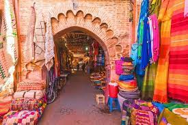
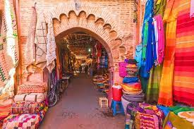
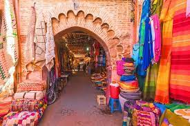

.jpg)
.jpg)
.jpg) 

Marrakech (en arabe : مُرَاكُش, murrākuš ; en berbère : ⵎⵕⵕⴰⴽⵛ, Meṛṛakc) est une ville située dans le centre du Maroc au pied des montagnes de l'Atlas4. Marrakech est surnommée « la ville rouge »N 1ou la « ville ocre » en référence à la couleur rouge d'une grande partie de ses immeubles et de ses maisons5. Marrakech et son aire urbaine comptent en 2020 un peu plus d'un million d'habitantsN 2. Par sa population, la ville est la troisième agglomération du pays, à égalité avec sa rivale historique, Fès, derrière Casablanca et Rabat. Cité impériale, au même titre que Meknès, Fès et Rabat, Marrakech fut la capitale du Maroc pendant près de 350 ans, sous les dynasties Almoravide (xie – xiie siècles), Almohade (xiie – xiiie siècles), Saâdienne (xvie – xviie siècles), ainsi que sous le règne de Mohammed ben Abdallah de l'actuelle dynastie alaouite (régnant de 1757 à 1790). Marrakech abrite une vaste médina de 600 hectares, la plus peuplée d'Afrique du nord, et classée au patrimoine mondial de l'humanité par l'UNESCO. Grâce à la vitalité de sa médina, vieille de 900 ans, ses infrastructures hôtelières de classe mondiale et son climat ensoleillé, Marrakech s'est imposée comme la capitale incontestée du tourisme au Maroc. Desservie par le deuxième aéroport du pays en termes de trafic, l'aéroport Marrakech - Ménara, la ville a accueilli en 2019 près de 3 millions de visiteurs.
arrakech (Mourrakouch) fut fondée en l'an 1071 (an 463 de l'Hégire) par le souverain berbère Sanhadjiens almoravide Youssef ben Tachfine14 et sa reine Zaynab Nefzaouia, elle aussi d'origine berbère. Très vite, à Marrakech, sous l'impulsion des Almoravides, pieux guerriers et austères savants venus de l'actuel désert mauritanien, de nombreuses mosquées et médersas (écoles de théologie coranique) furent construites, ainsi qu'un centre commercial drainant le trafic entre le Maghreb occidental et l’Afrique subsaharienne. Marrakech grandit rapidement et s'imposa comme une métropole culturelle et religieuse influente, supplantant Aghmat et Sijilmassa. Des palais furent édifiés également et ornés avec le concours d'artisans andalous venus de Cordoue et de Séville, qui apportèrent le style omeyyade caractérisé par des coupoles ciselées et des arcs polylobés. Cette influence andalouse fusionna avec les éléments sahariens et ouest-africains, et fut synthétisée dans une architecture originale totalement adaptée à l'environnement spécifique de Marrakech.La ville devint la capitale de l'Émirat almoravide, un empire eurafricain qui s'étendait des rives du fleuve Sénégal jusqu'au centre de la péninsule Ibérique et du littoral atlantique marocain jusqu'à Alger. La cité fut ensuite fortifiée par le fils de Youssef Ibn Tachfin, Ali Ben Youssef, lequel fit édifier vers 1122-1123 des remparts encore visibles. Pendant qu'Youssef Ben Tachfine menait des campagnes victorieuses en Al-Andalus, soumettant les roitelets des taïfas et repoussant les offensives de la Castille et de l'Aragon, son épouse Zaynab Nefzaouia exerçait à Marrakech un pouvoir important, avec toutes les prérogatives d'une véritable reine

| MÉDINA | CENTRE VILLE – GUÉLIZ ET HIVERNAGE | PALMERAIE | ROUTE DE L’OURIKA |
|---|---|---|---|
| La médina est le cœur frénétique de Marrakech. Un site du patrimoine mondial de l’UNESCO, c’est le plus grand marché antique dans toute l’Afrique du Nord. Cette zone présente les riads traditionnels, les monuments historiques et les sites à ne pas manquer ! Un grand exemple est la place Jemaa el Fna. La Médina est une zone extrêmement occupée, à éviter si vous chercher un lieu calme. Mais elle reste l’endroit idéal pour ceux qui recherchent une authentique expérience exotique à Marrakech. | Le centre-ville montre un visage très différent de Marrakech, avec ses boulevards, son théâtre Royal, sa nouvelle gare, ses boutiques, ses restaurants et ses hôtels de luxe. Venez entrevoir un Marrakech modernisé. Le centre-ville est destiné à ceux qui aiment les sorties et le shopping. | La Palmeraie est une région merveilleusement luxueuse. Dans ce quartier, vous bénéficierez de l’air pur avec des espaces merveilleusement ouverts, jardins et terrains de golf. La Palmeraie est le quartier parfait pour ceux qui recherchent une zone calme et proche du centre-ville. Pour les golfeurs, c’est un must! | Plusieurs établissements touristiques sont installés dans la route de l’Ourika (entre 5km et 30km de la ville). Les avantages de séjourner dans cette zone sont nombreux : espace, ambiance, calme, prix avantageux … En raison de l’emplacement vous aurez besoin d’un moyen de transport. Cependant, l’isolement de cette région est son meilleur atout, surtout pour ceux qui recherchent le repos et la détente. |